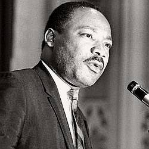

Martin Luther King Jr. - Top 10 Important Events
By: Sofia
Birth and Early Life
Martin Luther King Jr. is a towering figure in American history, whose life and legacy continue to inspire people around the world. In this article, we explore the top 10 important events in his life that shaped him into the iconic civil rights leader he is remembered as today. This subheading will delve into his early years, the formative experiences he had as a child, and how they helped lay the groundwork for his future accomplishments.
Born on January 15, 1929, Martin Luther King Jr. grew up in Atlanta, Georgia, where his family was deeply involved in the church. His father, Martin Luther King Sr., was a minister at the Ebenezer Baptist Church, and his mother, Alberta Williams King, was a church organist. From a young age, young Martin was exposed to the teachings of Christianity and the importance of fighting for justice and equal rights.
As a child, King was a precocious student, often skipping grades and excelling in his studies. Despite the segregation and discrimination that pervaded southern life in the 1930s and 1940s, King enjoyed a relatively privileged upbringing, attending good schools and receiving a quality education. However, he was not sheltered from the harsh realities of racism, and witnessed firsthand the injustices faced by his fellow African Americans in his community.
It was during his time as a student at Morehouse College in Atlanta that King began to develop a deep understanding of the power of nonviolent protest and civil disobedience. Inspired by the teachings of Mahatma Gandhi and other civil rights leaders, King became an ardent advocate for social justice and equality, and began to pave the way for the historic civil rights movement that would soon capture the nation's attention.
In conclusion, King's birth and early life were a crucial part of his journey towards becoming one of the most important figures in American history. From his exposure to the teachings of Christianity to his encounters with racism and discrimination, every experience helped him shape his vision for a more just and equal society.
ad space
Montgomery Bus Boycott
In 1955, Rosa Parks refused to give up her seat on a Montgomery, Alabama public bus to a white passenger, an act of defiance that would ignite the Civil Rights Movement. The Montgomery Bus Boycott, which lasted for over a year, became a crucial turning point in Martin Luther King Jr.'s career and solidified his leadership in the fight for racial equality.
The boycott began on December 5, 1955, just four days after Rosa Parks' arrest. Black residents of Montgomery, led by King and other civil rights leaders, organized a massive protest against the city's discriminatory bus laws, which required black passengers to sit at the back of the bus and give up their seats to white passengers if the front of the bus was full. The boycott was a huge success and caused a significant financial impact on the Montgomery Bus Company, forcing them to desegregate their buses.
During the boycott, King emerged as an eloquent and influential voice for justice and equality. He spoke at rallies, organized peaceful demonstrations, and helped to mobilize the black community. King's nonviolent tactics, including the boycott and his famous "I Have a Dream" speech, would go on to inspire similar movements around the world.
The Montgomery Bus Boycott was a critical moment in the Civil Rights Movement and marked the beginning of King's rise to national prominence. It helped to galvanize support for the racial justice movement among both black and white Americans and set the stage for future struggles for equality. Its legacy is still felt today, as it serves as a reminder of the power of peaceful protest and the need for continued progress towards a more just and equitable society.
ad space
March on Washington for Jobs and Freedom
On August 28, 1963, the world watched in awe as over 250,000 people gathered in front of the Lincoln Memorial in Washington D.C. for what was to become one of the most iconic events in American history: The March on Washington for Jobs and Freedom. This civil rights protest rally, organized by civil rights leaders including Martin Luther King Jr., called for an end to racial discrimination and the creation of employment opportunities for all Americans.
The march was a peaceful demonstration and included speeches by prominent civil rights activists, including Martin Luther King Jr. He delivered his famous "I Have a Dream" speech, which is still regarded as one of the greatest speeches in American history. In it, he called for an end to systemic racism and segregation, and for the fulfillment of the American promise of equality and freedom for all.
The March on Washington for Jobs and Freedom highlighted the power of peaceful protest and paved the way for the Civil Rights Act of 1964 and the Voting Rights Act of 1965. It also influenced the fight for social justice and equality across the world.
One of the most significant takeaways of the march was the sheer size of the crowd. It was at the time the largest peaceful protest in American history, and its impact on society can be measured through its lasting impact and the positive change that it brought about.
In summary, the March on Washington for Jobs and Freedom was a pivotal event in the history of Martin Luther King Jr., civil rights, and America as a whole. It brought about a renewed sense of hope and determination for those fighting for basic human rights, and its legacy can still be felt today.
ad space
Nobel Peace Prize
"When Martin Luther King Jr. received the Nobel Peace Prize, he shifted the global conversation surrounding social justice and equality."
The Nobel Peace Prize is unquestionably one of the most significant events in the life of the Reverend Martin Luther King Jr., and it's not exclusively about winning a prestigious honor. The crown jewel of King's accomplishments, his Nobel Prize win demonstrated that the fight for social justice, civil rights, and equality were not exclusively a domestic matter for the United States to tackle.
King received the Nobel Peace Prize in 1964—the youngest person at the time to receive the award. He was also the opposite of what you might expect of a Nobel laureate, carefully considering and composing speeches, meticulously dressing up before public appearances, and living in luxury. Regardless, his Nobel honor was an enormous achievement and an emphatic victory for the civil rights movement he represented.
The Nobel Committee recognized King for his bold and uncompromising attempts to dismantle systemic racism in the United States, which they believed was undermining democracy and peace. King's activism, as did Gandhi's before him, brought ethics and spirituality to the forefront of the civil rights movements, using the power of love to diffuse hate and bringing together people from all faiths, backgrounds, and ethnicities regarding common goal.
King's Nobel Peace Prize acceptance speech is perhaps his most crucial presentation, articulating not only his values but also the significance of the struggle for equality and justice worldwide. Today, King's Nobel Prize win remains as relevant as it was when it first occurred when people all over the globe look to him for inspiration and preach for nobility in public service.
ad space
Selma to Montgomery March
As we take a closer look at the life of Martin Luther King Jr., one thing stands out: his unwavering commitment to achieving civil rights for all Americans. His actions and speeches against discrimination and racism influenced policy changes that shaped the future of America. King was involved in numerous events that led to pivotal moments for the civil rights movement, but perhaps the most unforgettable was the Selma to Montgomery March in 1965.
The Selma to Montgomery March was a sight to behold. Civil rights protestors from all walks of life came together in a peaceful demonstration to demand voting rights for African Americans. This event became known as "Bloody Sunday" due to the use of violent tactics against peaceful protestors by state troopers. Yet, King remained undeterred, and his leadership inspired 25,000 people to march from Selma to the state capital in Montgomery, Alabama.
This march marked a turning point in the civil rights movement. President Lyndon B. Johnson signed the Voting Rights Act, which permanently awarded African Americans the right to vote without the threat of discrimination or suppression. The Selma to Montgomery March illuminated the mistreatment and injustices Black Americans faced daily and solidified King's position as a global civil rights icon.
Today, we remember and honor this pivotal movement of Martin Luther King Jr.'s life. The Selma to Montgomery March exemplifies the struggle that Dr. King fought tirelessly for throughout his career: empowering citizens to come together to demand change for a better world.
ad space
Assassination of Martin Luther King Jr.
The Tragic End to a Remarkable Life: The Assassination of Martin Luther King Jr.
On April 4, 1968, the world lost one of its brightest lights when civil rights leader Martin Luther King Jr. was assassinated in Memphis, Tennessee. The shock and sadness of his death reverberated throughout the nation and sparked riots and protests in over 100 cities. The assassination of Martin Luther King Jr. was an event that forever changed the course of American history, and it still resonates with us today.
King was in Memphis to support a strike by African American sanitation workers who were demanding equal pay and better working conditions. Just moments after delivering one of his most famous speeches, "I've Been to the Mountaintop," King was struck by a single bullet fired from a nearby motel. He was rushed to a hospital, but within an hour, he was pronounced dead.
The assassination of Martin Luther King Jr. not only robbed the world of a transformative leader but also inflamed divisions between Black Americans and white Americans. In the days that followed, riots erupted in dozens of major cities, with millions of dollars in property damage and over 50 deaths. The tragedy of King's death underscored the pervasive racism and prejudice that still existed in America and underscored the need for continued peaceful protest and action.
Despite his tragic end, Martin Luther King Jr.'s lasting impact on civil rights and American society cannot be overstated. His assassination was a stark reminder of the hatred and bigotry that lingered in America and inspired a new generation of leaders to continue the fight for racial justice. His inspiring words and peaceful protests continue to inspire and challenge people around the world to seek justice, equality, and compassion. Today, his memory is honored through statues, memorials, and the federal holiday celebrated each January in his honor.
ad space
Civil Rights Act of 1964
The Civil Rights Act of 1964: One of the Greatest Victories in Martin Luther King Jr.'s Quest for Equality
As Martin Luther King Jr. fought for civil rights and equality for African Americans, his efforts culminated in one of the most momentous victories in U.S. history – the passing of the Civil Rights Act of 1964.
This landmark legislation, signed into law by President Lyndon B. Johnson, was a watershed moment in the broader American Civil Rights Movement. With its enactment, segregation on the basis of race, color, religion, or national origin became illegal, and America took a significant step towards true racial equality.
Despite its transformative nature, the legislative journey of the Civil Rights Act was long and tortuous, requiring years of unwavering advocacy and sacrifice by Martin Luther King Jr. and other civil rights leaders. The bill’s successful passage was only achieved due to a nationwide grassroots campaign inspired by Dr. King's call for justice and equality.
The importance of the Civil Rights Act of 1964 is hard to overstate. It represented a seismic shift in America's social and political landscape, finally granting African Americans the basic rights and protections they had long been denied. It paved the way for other landmark legislation in the ensuing years, including the Voting Rights Act of 1965 and the Fair Housing Act of 1968.
The legacy of Martin Luther King Jr. and his quest for civil rights for African Americans lives on today, more than half a century after the Civil Rights Act of 1964 was passed. His vision of a society free from prejudice and discrimination remains an inspiration to millions, and his example continues to guide and shape the modern civil rights movement.
As we look back on Martin Luther King Jr.'s Top 10 Important Events, it is impossible to underestimate the impact of the Civil Rights Act of 1964 – the defining moment of an era-defining struggle for justice and dignity.
ad space
Voting Rights Act of 1965
The Voting Rights Act of 1965: A Landmark Moment in American History
The Voting Rights Act of 1965 is one of the most significant moments in American history, especially in the Civil Rights Movement. Signed into law by President Lyndon B. Johnson on August 6, 1965, it prohibits racial discrimination in voting and aims to remove barriers that have prevented African Americans from exercising their constitutional right to vote.
Before the Voting Rights Act, discrimination and voter suppression were widespread in the southern states. African Americans were subjected to unfair and illegal tactics such as poll taxes, literacy tests, and intimidation to keep them from registering and casting a ballot. The Act put an end to these tactics by introducing federal laws that ensured equal voting rights for all Americans.
Martin Luther King Jr. was a prominent advocate for voting rights, and his activism played a pivotal role in the passage of the Act. In his famous speech at the March on Washington for Jobs and Freedom in 1963, King spoke passionately about the need for equal voting rights for all Americans, regardless of race. His leadership and advocacy efforts helped to mobilize support for the Voting Rights Act and make it a reality.
Since its passage, the Voting Rights Act has been a vital tool in protecting the rights of millions of Americans. In the half-century that followed, the Act helped African Americans, as well as other minorities, access the ballot box and make their voices heard. However, the 2013 Supreme Court decision in Shelby County v. Holder weakened the Act and eliminated some of its protections.
Despite this setback, the legacy of the Voting Rights Act lives on, and its importance in American history cannot be overstated. To learn more about this landmark moment and the other important events in Martin Luther King Jr.'s life, explore our website's top 10 Martin Luther King Jr. events.
ad space
Albany Movement
In the pantheon of American civil rights heroes, few loom as large as Martin Luther King Jr. A true champion of equality and justice, King's legacy continues to inspire countless people around the world. Throughout his life, King was at the forefront of the most important struggles for civil rights, and his tireless efforts helped pave the way for generations to come. This website aims to explore King's legacy by highlighting ten of the most significant events in his life, and the impact they had on the course of American history.
The Albany Movement was one of the most important events in King's life and career. In the early 1960s, Albany, Georgia was a hotbed of racial tension and unrest. In response, King and other civil rights leaders organized a massive, peaceful protest movement aimed at promoting racial equality and justice for all. Over the course of several months, thousands of protesters marched, picketed, and engaged in civil disobedience, all in the name of justice.
Although the Albany Movement ultimately did not achieve its primary goal of desegregating the city, it did succeed in drawing national attention to the issue of civil rights in the Deep South. And for King himself, the movement offered a chance to hone his political skills and leadership abilities, as he learned how to inspire, motivate, and organize a large group of people in service of a common cause.
Perhaps most importantly, the Albany Movement set the stage for King's future success as a civil rights leader. Over the next several years, King would continue to refine his message and tactics, ultimately achieving national recognition as one of the most important figures in the struggle for civil rights. And while he tragically lost his life in 1968, King's legacy continues to inspire new generations of activists and advocates for civil rights and social justice.
ad space
Southern Christian Leadership Conference
The Southern Christian Leadership Conference: Uniting Faith and Activism for Equality
Martin Luther King Jr.'s leadership in the civil rights movement cannot be understated, but he was never alone in his fight. The Southern Christian Leadership Conference (SCLC) was founded in 1957 with the specific goal of ending segregation and injustice against African Americans. The SCLC would become one of the most important organizations in the struggle for civil rights in America in the 20th century.
Under King's guidance, the SCLC organized marches, boycotts, and demonstrations, drawing on the power of the black church to inspire and unify black communities. King's impassioned speeches and nonviolent protests would be the driving force behind the passage of the Civil Rights Act and the Voting Rights Act, two landmark pieces of legislation that transformed America.
But the SCLC was more than just a platform for King's activism. The organization was rooted in the principles of faith, justice, and equality, all of which were core values of the black church tradition. The SCLC was unique in its ability to bring together activists, ministers, and communities in a common purpose.
Throughout the 1960s, the SCLC took on some of the most daunting challenges facing the civil rights movement, from racist police brutality to widespread poverty. In 1968, the organization played a key role in organizing the Poor People's Campaign, a massive demonstration that demanded economic justice for all Americans regardless of race.
Today, the SCLC continues to fight for social justice, promoting nonviolent resistance and citizen action across the country. King's legacy and the activism of the SCLC remind us that faith and activism can be powerful tools for change, inspiring us to continue the fight for a more just and equitable society.
ad space
Conclusion
As we conclude our exploration of Martin Luther King Jr.'s top 10 important events, it is clear that his impact on American society and the world at large is immeasurable. From his leadership in the civil rights movement to his advocacy for peace and equality, King's legacy continues to inspire generations of activists, community leaders, and everyday citizens.
It is impossible to fully comprehend King's impact without recognizing the events that shaped his journey. As we've seen, King's commitment to nonviolent resistance was forged in his early experiences with segregation and discrimination. The Montgomery Bus Boycott, which lasted over a year, was a pivotal moment in the civil rights movement and demonstrated the power of collective action.
King's famous "I Have a Dream" speech, delivered during the March on Washington, remains one of the most iconic speeches in American history. His message of hope and unity continues to resonate to this day.
Despite encountering significant opposition and even violence, King remained steadfast in his commitment to nonviolence and social justice. His leadership during the Selma to Montgomery march and his work with the Poor People's Campaign demonstrated his unwavering dedication to creating a more just and equitable society.
As we reflect on King's achievements, it is clear that his legacy continues to inspire and guide us as we work to create a more just and equitable society. By honoring King's memory and continuing his work, we can ensure that his vision of a world free from oppression and discrimination lives on.
ad space